How to use Anynotate
Every step from install to a finished change, with screenshots. Click any picture to see it full size.
Install
- Install the bridge, a small helper that runs on your computer. Paste one line into a terminal:
On Windows, in PowerShell:
curl -fsSL https://github.com/genexk/anynotate/releases/latest/download/install.sh | shirm https://github.com/genexk/anynotate/releases/latest/download/install.ps1 | iex - Add the Anynotate extension to Chrome, Edge, Brave or Chromium. It is coming to the Chrome Web Store soon.
- The extension opens a welcome page. When it says Connected, you are ready.

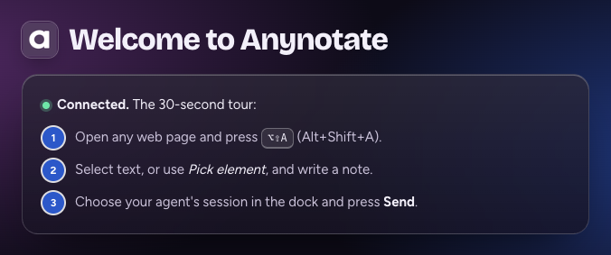
Use herdr? herdr plugin install genexk/anynotate/integrations/herdr installs the bridge too, and adds the inbox popup.
Make your first note
- Open any page and press Alt+Shift+A (⌥⇧A on a Mac), or click the Anynotate icon and choose Annotate this page. The Anynotate panel opens in the corner.
- Select some text. A note box opens under it.
- Write what you want done, then press Save (or Ctrl+Enter, ⌘Enter on a Mac).
From the keyboard: select text with Shift and the arrow keys (caret browsing, F7); the note box opens when you let go of Shift.

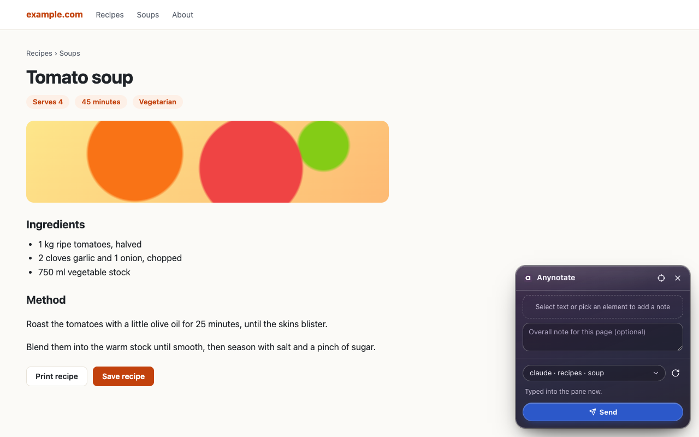

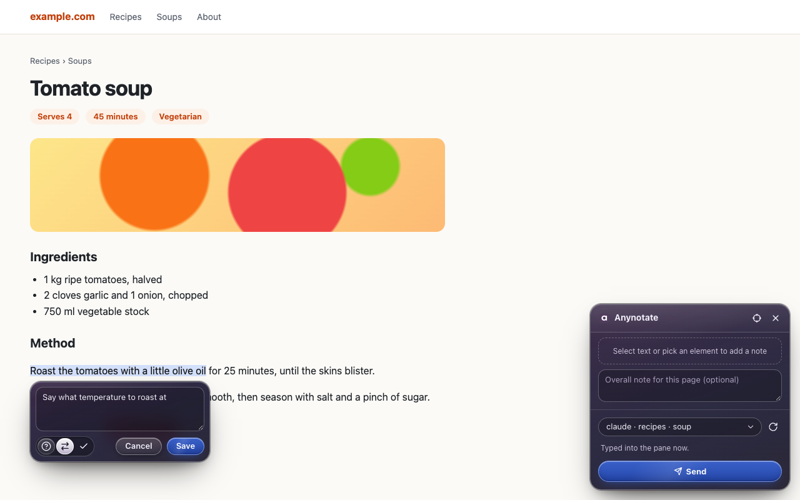
Pick elements
For a button, an image or a whole block, pick the element instead of selecting text. Your agent gets its HTML and a crop of what it looks like.
- Click the crosshair in the panel, or press Alt+Shift+E. You can also hold Alt and click.
- Move over the page: an outline and a label show what you would pick.
- Click it and write your note.

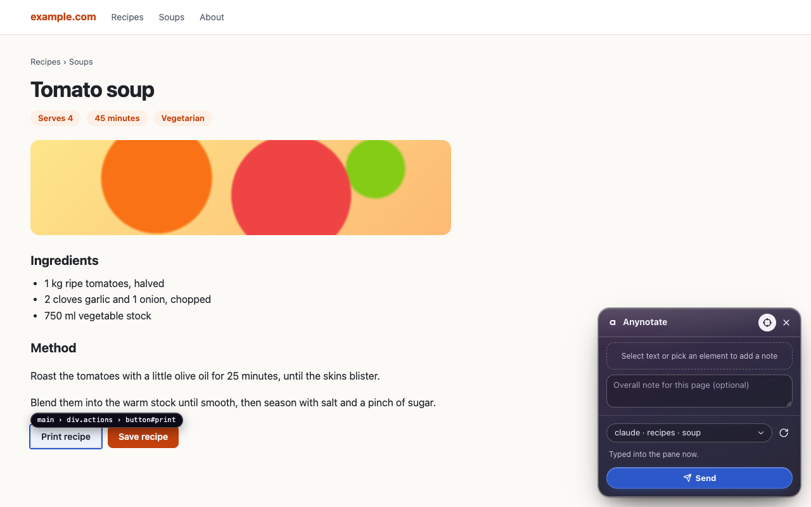
Elements inside open shadow roots can be picked too.
Frames
- Frames from the same site work like the rest of the page.
- A frame from another site, such as an AI chat artifact or an embedded tool, is picked as a whole. The panel shows Content here comes from that site with Allow and Not now; press Allow and Chrome asks you to approve the site. After that you can select text, pick elements and draw regions inside its frames.
- One Allow covers every claude.ai artifact.
- Allowed sites are listed in the options under Frames from other sites, each with Remove.
- Payment forms from card providers are never entered.
Mark a region
For something that is not its own element, such as part of a chart, a canvas, a corner of an image or a patch of blank space, draw a box around it.
- Turn on the picker: click the crosshair in the panel, or press Alt+Shift+E (⌥⇧E on a Mac).
- Press and drag over the area. A dashed box follows the pointer; Esc cancels it. A plain click still picks the whole element.
- Let go and write your note.

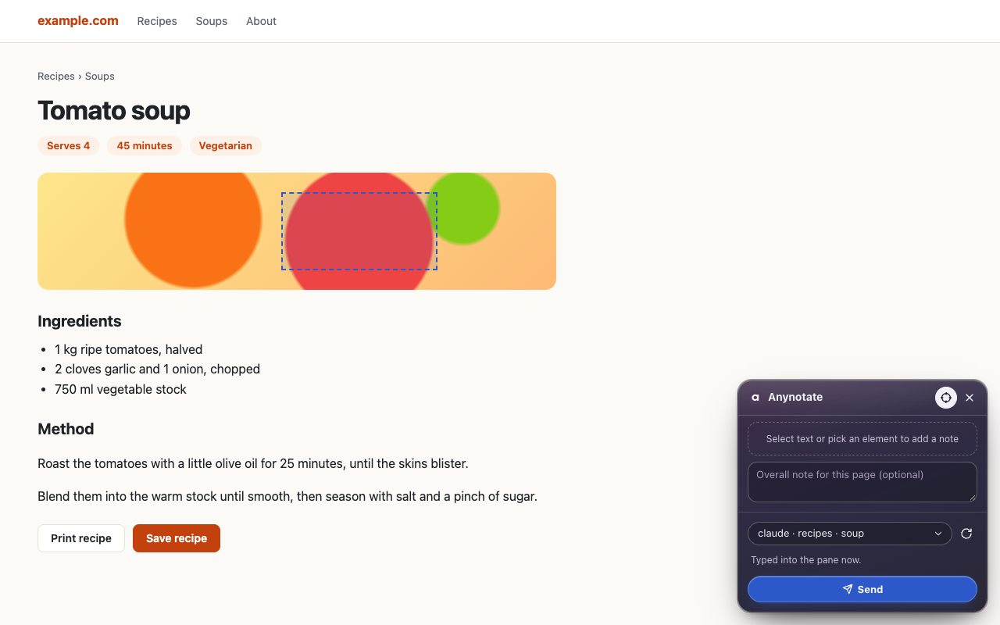

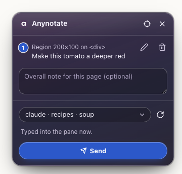
The note belongs to the element under the box, and the box stays on the page with its number. Your agent's README gets a line such as Region: 200×100 at (360, 246) on <div#hero> · see crops/A1.png, and the note's crop is just the box.
Pages that draw their content on a canvas, like charts and maps, have no text to select. Click one and the panel suggests dragging a region.

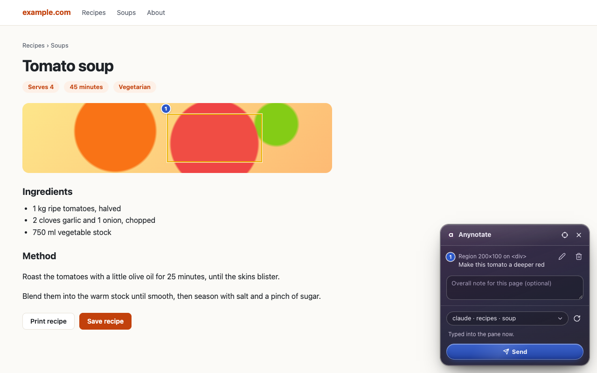
Tag intent
Three icons under the note say what kind of answer you want. Tagging is optional; click a pressed icon again to clear it.

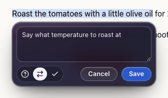
- Explain — you have a question; the agent should answer, not edit.
- Request change — the agent should change this.
- Approve — this is right; leave it alone.
Edit and delete
Every note gets a number on the page and a row in the panel, and stays there until you send it, even if you close the tab.
- To change a note, click its highlight on the page or the pencil in its row. The note box opens with your text.
- To remove a note, click the bin in its row.
- Optionally, add an overall note for the whole page in the box under the list.
Pages that change
- Notes stay attached through live values (an age like 36s, a counter), re-rendered lists and hash routes.
- A note that is off screen, or in a view that isn't showing, gets a Scroll to button in its row. If it still can't be found, choose Keep or Mark orphaned.
- Off-screen and orphaned notes are still sent, with the crop taken when you made them, marked Not on the page when sent.
- When a page's address changes, the panel offers notes made on another path that match it: N notes from /path match this page, with Show here and Not now.

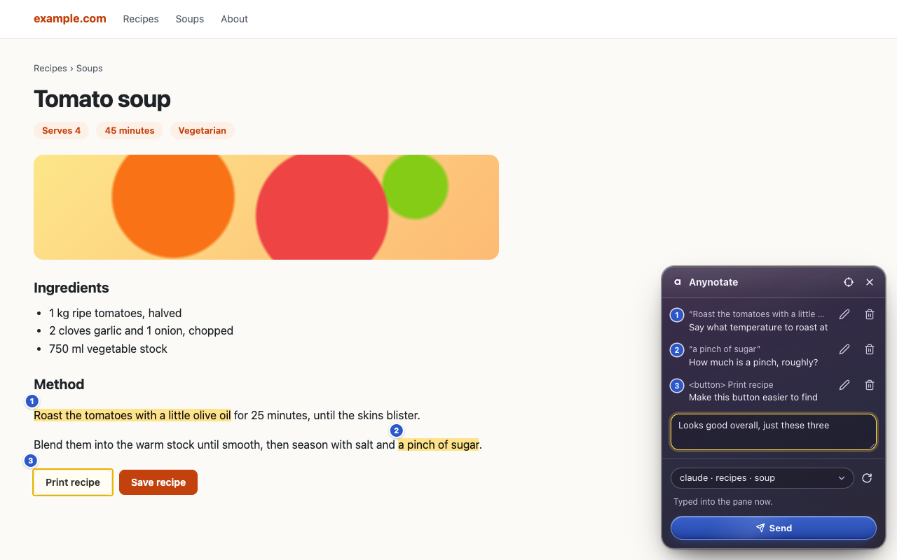

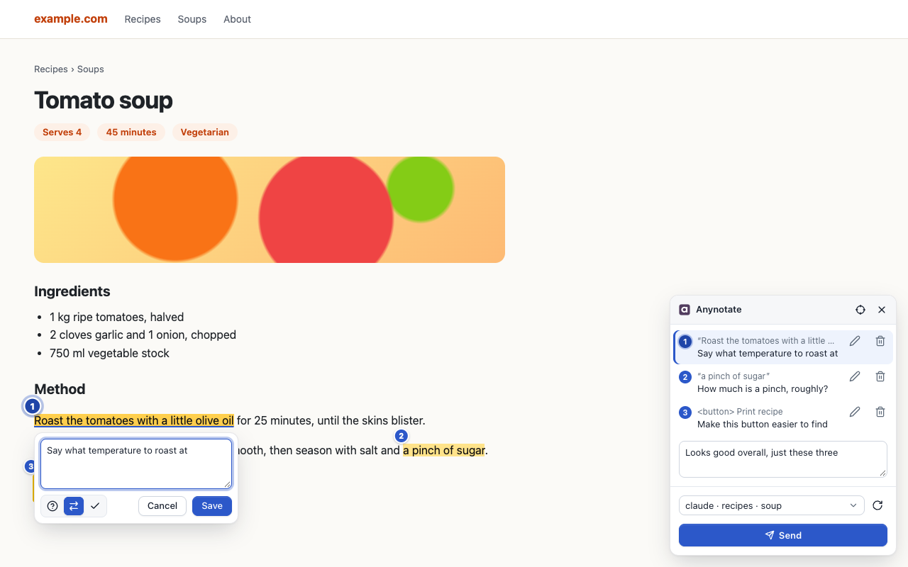
Send to an agent
- Choose where the notes go in the session picker at the bottom of the panel. Each session reads
workspace · agent · folder · title, and a line under the picker says how the one you chose gets the notes. The ↻ button refreshes the list. - Press Send (or Alt+Shift+S to send to the last place you used). The panel shows a spinner while it captures the page and hands it to the bridge.
- The line under Send tells you when your agent has the notes, and shows ✓ with the agent's summary once it marks them done.


| In the picker | What happens |
|---|---|
| ⚡ push | A session connected live to the bridge gets the notes right away. |
| Sessions | Herdr panes and sessions outside herdr, in one list. Any agent in a herdr pane gets the notes typed into the pane as soon as it is idle; the pane's herdr workspace leads its name. |
| … ⏳ | A Claude Code or Codex session outside herdr: the notes arrive with your next message in that session. Claude app marks a session in the Claude desktop app. |
| 📥 Inbox | One inbox for any agent or app: it reads the notes when you ask, with /annotations, anynotate annotations latest or over MCP. |
The hint under the picker for each choice:
| Choice | Hint |
|---|---|
| herdr pane | Typed into the pane now. |
| ⚡ push | Pushed into the session now. |
| … ⏳ | ⏳ Arrives with your next message in that session. |
| 📥 Inbox | Any agent reads it with /annotations or MCP. |
What the agent sees
Each send becomes a folder in ~/.anynotate/inbox/. The agent is pointed at its README.md: your notes in order, with the quoted text or element, your intent and comment. Next to it are the page as text, a screenshot with the numbered markers, and a crop for each note.

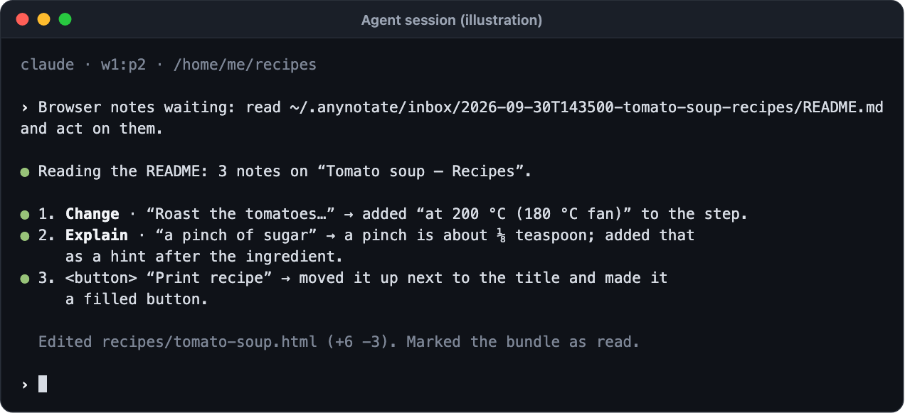

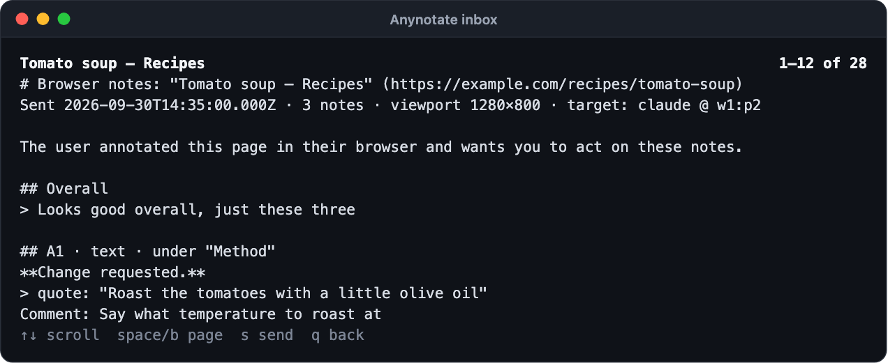
Use the herdr inbox
The inbox lists everything you have sent, newest first, with where it went and whether the agent has read it. Open it with anynotate inbox in any terminal, or as a popup in herdr with the plugin (bind it to a key such as prefix i; see the plugin's key bindings).

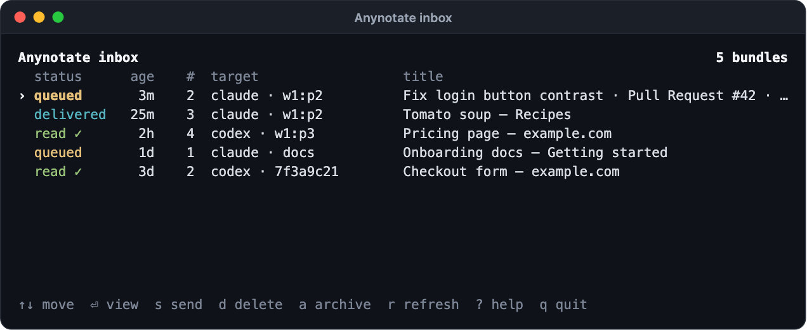
| Key | Does |
|---|---|
| ↑ ↓ or k j | Move |
| Enter | Read the bundle's README |
| s | Send the bundle to a herdr agent pane |
| d | Delete the bundle (asks first) |
| a | Show or hide archived bundles |
| r | Refresh |
| ? | Help |
| q or Esc | Back, or quit |

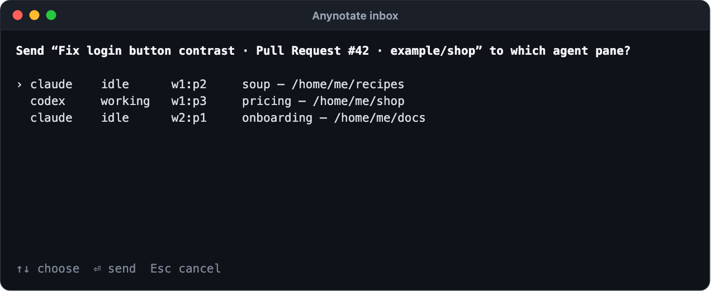

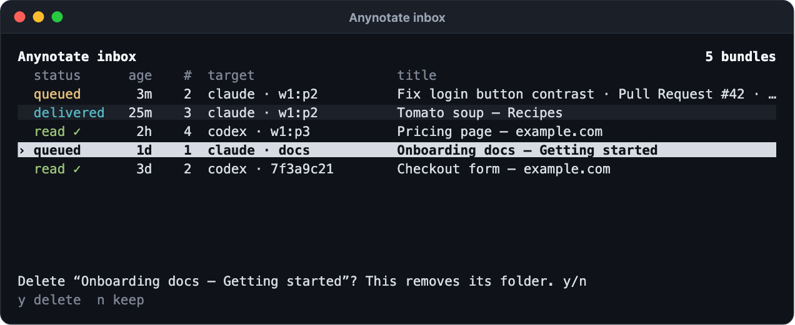

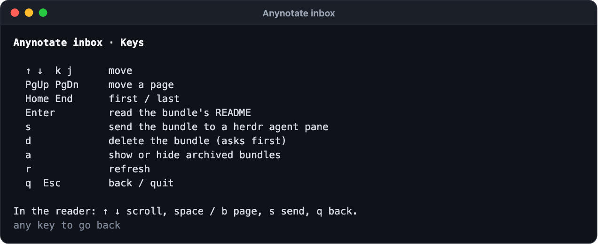
Use with Claude Desktop, Codex or Cursor
Apps read your notes through anynotate mcp, a local MCP server that never goes online. It works in Claude Desktop (chat and Cowork), Cursor, Codex and Claude Code.
- See which apps Anynotate finds. Nothing is changed yet.
anynotate mcp install - Add it to the apps you use with
--claude-desktop,--codex,--cursoror--claude-code. Anynotate keeps everything else in each app's settings and saves a backup first.anynotate mcp install --claude-desktop --cursor - Restart the app. It now lists the Anynotate tools:
list_notes,read_notes,mark_doneandget_screenshot. - Send your notes to the 📥 Inbox in the extension, then ask the app to read my browser notes. In Claude Desktop you can also pick review-browser-notes from the + menu.
- The app marks them done when it has acted on them, and the panel shows ✓ with its summary.
To remove it again, run anynotate mcp uninstall with the same flags.
Settings and storage
Open the extension's options from its menu (right-click the Anynotate icon, then Options).
- Bridge shows whether the bridge answers, how many sessions it sees, and the extension and bridge versions.
- Storage counts the notes you have not sent yet. They live only in your browser; Clear all unsent notes removes them.
- Frames from other sites lists the sites you allowed Anynotate into; Remove takes one away.
- Advanced is for a bridge on a different port.

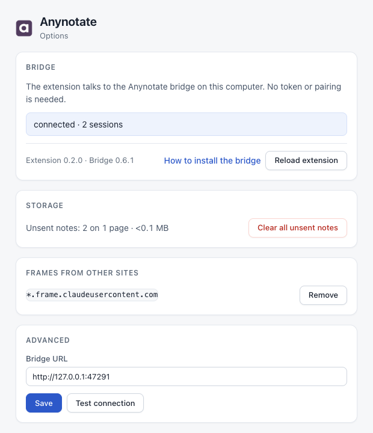
Sent notes are kept in ~/.anynotate/inbox/ and deleted 30 days after delivery. Change that with anynotate retention 7, or anynotate retention off; anynotate prune deletes everything past the period now.
Privacy on the page
- Password, payment-card and one-time-code fields are covered in screenshots and blanked in captured text, in the page, its same-site frames and frames you allowed.
- The panel lives in a closed shadow root, so the page's scripts can't read it.
- Anynotate does nothing on a page until you turn it on there.
Troubleshooting
One command checks the install, the bridge, the Chrome helper and the agent hooks, and tells you what to fix:
anynotate doctorSome pages can't be annotated, and the Anynotate menu says why: browser and extension pages, the Chrome Web Store, view-source pages and PDFs. Local file:// pages need Allow access to file URLs turned on for Anynotate in chrome://extensions.
Common problems and their fixes are on the support page.